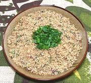

|
FarofaBrazil - Farofa | ||||
| Serves: Effort: Sched: DoAhead: |
3 side ** 45 min Yes |
Farofa is a wildly popular side dish in Brazil. This is a simple version, but it also in other ways suitable for breakast or light lunch (see Farofa with Eggs). | |||
|
1 2-1/2 1-1/2 2 2 1/4+ 1/3 1/4 |
c oz oz T T c t t |
Manioc Farina (1) Onion Bacon Parsley Scallion Greens Butter Salt Pepper |
The trick with Farofa is to get the amount of butter just right - not too wet, not too dry. For vegetarian, use 2 T Olive Oil instead of Bacon. Prep - (15 min)
|